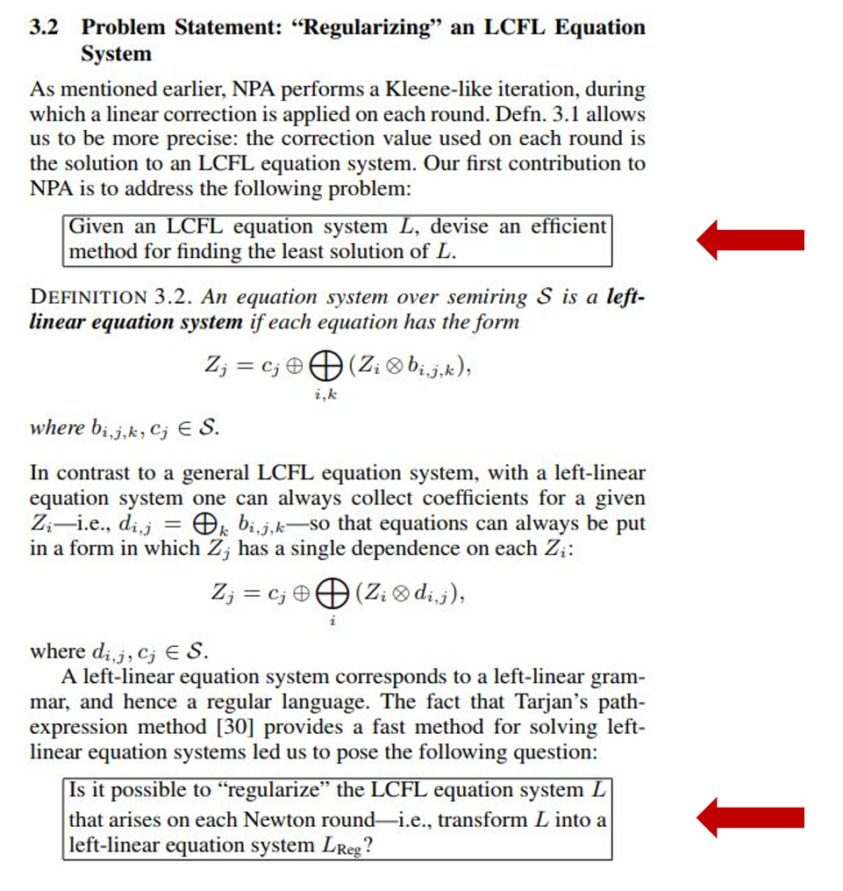

这是一篇关于撰写论文中的技巧的ppt，其中对几篇相关的论文进行了归纳、总结。鉴于没有相关的讲解，所以我这里只对ppt中提及的部分的理解进行记录。
一个总体原则
论文的目的是将你的想法从你的头脑传达给读者。所有的选择都是为了支持这一目标 。
当你重读和自我批评时，你的标准是：“这些材料最能支持向读者传达我的想法吗？”
用例子和图片介绍问题和你的想法
两大挑战
1.让评阅人感兴趣
2.注意期刊的篇幅限制，各种会议都会有不同的要求。合理利用空间
叙述流程
想象在一面白板上进行解释：
- Here is a problem
- It’s an interesting problem
- It’s an unsolved problem
- Here is my idea
- My idea works (details, data)
- Here’s how my idea compares to other people’s approaches
结构：
- Title (1000 readers)
- Abstract (4 sentences, 100 readers)
- Introduction (1 page, 100 readers)
- The problem (1 page, 10 readers)
- My idea (2 pages, 10 readers)
- The details (5 pages, 3 readers)
- Related work (1-2 pages, 10 readers)
- Conclusions and further work (0.5 pages)
完整的结构：
1.摘要：
1.State the problem
2.Say why it’s an interesting problem
3.Say what your solution achieves
4.Say what follows from your solution
2.介绍：
描述问题（可以用例子），说明你的贡献
1.不要用 “文章的剩余部分是。。。” 而是通过在介绍中实现前向的参考，因为介绍中应该涵盖整篇论文的内容。
2.不要急着介绍相关工作，因为读者目前还不够了解这个问题，你对相关工作介绍会让他们无法理解，除非：
- 你需要让读者了解一些必要的前提背景
- 你要通过与相关工作比较确保你的读者不会误解你的想法
- 你要通过一些相关工作介绍，借机提出你的想法
想法，论文只应该有一个想法，可能刚开始写的时候没有，但完成的时候一定要有，要确保读者知道想法是什么。
3.问题陈述
问题应该以一种独立于任何特定技术或方法的形式陈述。
4.技术细节
技术细节通常是最容易写的部分，给出问题的解决方案，包括算法的伪代码、定理等。
5.实验
1.实验问题：
想要检验什么假设？
2.实验设置：
各种实验参数，CPU，存储数量，操作系统版本等。
3.实验结果：
通过图片、表格等展示结果，别忘了说明结果和实验问题的联系。
6.相关工作
不要只是列举相关论文，要诚实地进行比较。不要为了让自己的工作看着好看，而让别人的工作看着不好。
Giving credit to others does not diminish the credit you get from your paper
Failing to give credit to others can kill your paper
7.总结
类似于摘要，但可以使用正文中介绍的技术概念。